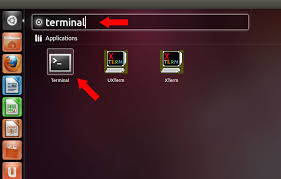
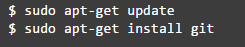
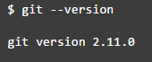

Important Software and tools
By URVI SONI
Online
- (A1) GIT | www.github.com | Version Control
Wikipedia Links (English)
Offline
- (A1) Sublime | www.sublimetext.com | Code Editor (Windows 9 MB/ Mac 13 MB / Linux 8 MB )
ઉબન્ટુ (લિનક્સ) માં GIT install કરવાની રીત
STEP:-1 Git શું છે..?
=> Git એક એવું ઓપન source version કન્ટ્રોલ સિસ્ટમ(સર્વર) છે કે જેમાં તમે તમારા પ્રોજેક્ટ પર online અને offline બંને રીતે કામ કરી શકો છો . તેમાં એક સાથે વધારે વ્યક્તિઓ પણ Git ઉપર કામ કરી શકે છે. તમે તમારા codding ની file તેની ઉપર સેવ કરી શકો છો. અને તમારી website પણ બનાવી શકો છો.
STEP:-2 ઉબન્ટુ(લિનક્સ) માં git insall કરવાની રીત:-
સૌ પ્રથમ ઉબન્ટુ(લિનક્સ) માં ટર્મિનલ ખોલો ..... નીચે મુજબ દર્શાવેલ છે....

તેમાં આ મુજબ આવશે:-

હવે તેમાં નીચે મુજબ લખો(ટર્મિનલ માં)

git નું કયું version download થયું છે તે જોવા માટે નીચે મુજબ લખો ટર્મિનલ માં .....
ત્યારબાદ નીચે મુજબ આવશે ..
